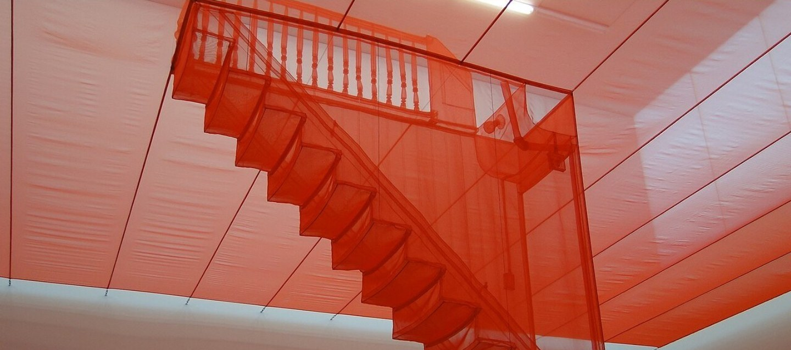
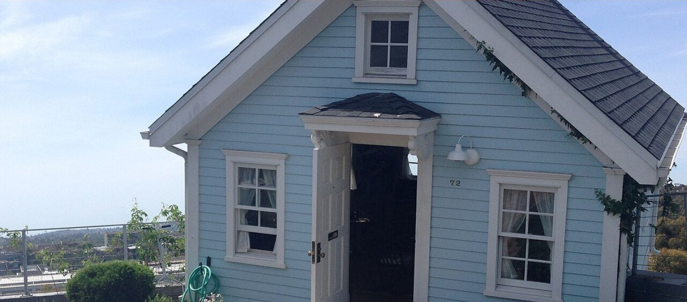
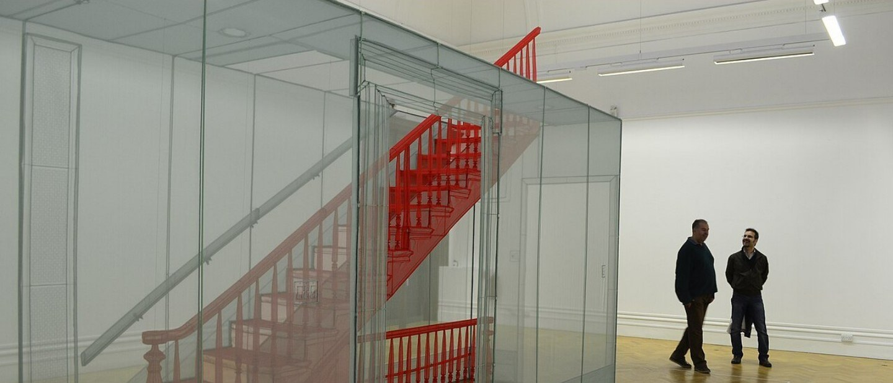

Selected Works
Eight pieces from 1997 to 2016. The title, year, and materials are always listed under each image.
-

01 Seoul Home/L.A. Home 1999 · Silk, metal armatureA full-size copy of his childhood house in Seoul, sewn from pale green silk. It hangs in the air and can be folded into a suitcase, so the house travels with him.
-

02 High School Uni-Form 1997 · Fabric, plastic, stainless steel, castersThree hundred Korean school uniform jackets sewn together at the shoulders, with no heads or hands. It asks how much of who we are is shaped by the group we belong to.
-

03 Floor 1997–2000 · PVC figures, glass plates, phenolic sheets, resinVisitors walk on glass panels held up by thousands of tiny figures with raised arms. Looking down, you notice the crowd carrying the weight beneath you.
-

04 Paratrooper II 2005 · Monofilament, resin, nylon, poly organza, stainless steelA see-through figure hangs from colored threads under a parachute made of 225 sheer blouses. One person, held up by many.
-

05 Staircase-III 2010 · Polyester fabric, stainless steelA staircase from his New York building, sewn in bright red fabric and hung from the ceiling, so it floats above the people walking under it.
-

06 Fallen Star 2012 · Mixed media, UC San DiegoA small cottage that looks like it crashed onto a building, as if blown there by a storm. A permanent version sits tilted on a rooftop at UC San Diego.
-

07 348 West 22nd Street 2011–2015 · Polyester fabric, stainless steelHis New York apartment, hallway, and stairwell recreated in see-through fabric. Visitors walk through it like a memory you can step inside.
-

08 Hub works 2015–2016 · Polyester fabric, stainless steelEntrances and hallways from homes he has lived in, sewn in glowing colors and joined end to end: the in-between spaces of a life spent moving.